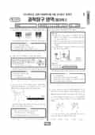

문제지

시험지 만들기준비하고 있어요. 열리면 아래 탭에서 바로 쓸 수 있어요.
2024학년도 6월 모의평가 · 2023년 6월 시행
2024학년도 6모 과학탐구 물리학Ⅰ 1등급컷은 원점수 47점(추정), 표준점수 최고점은 69점입니다.
원점수 1등급컷은 공식 발표값이 아니라 EBSi·입시기관 값입니다. 등급별 값은 등급컷 표, 출처 구분은 데이터 원칙에 있습니다.

정답 변경 없음
원문 표에서 이 과목 문항을 찾지 못했어요
시험 전체 관련 보도 4건은 2024학년도 6월 모의평가 회차 페이지에 모아 두었어요.
한국교육과정평가원이 교육부 보도자료로 공개한 표준점수 도수분포로 계산했습니다.
EBSi 응답자 기준으로 가장 많이 틀린 문항은 19번(3점)이고, 오답률은 72.6%입니다. 상위 15문항 중 1문항은 정답보다 한 오답을 고른 사람이 더 많았습니다(16번: 정답 ① 28.3%, ③ 29.7%). 오답률 50%를 넘은 문항은 8개입니다.
| 순위 | 문항 | 배점 | 오답률 | 정답 | 많이 고른 오답 |
|---|---|---|---|---|---|
| 1 | 19번 | 3점 | 72.6% | ④ | ③ 24.6% |
| 2 | 16번 | 2점 | 71.7% | ① | ③ 29.7% |
| 3 | 20번 | 2점 | 65.2% | ③ | ② 24.6% |
| 4 | 18번 | 3점 | 64.1% | ② | ④ 23.6% |
| 5 | 8번 | 3점 | 62.3% | ② | ④ 22.4% |
| 6 | 6번 | 3점 | 58.3% | ⑤ | ③ 27.3% |
| 7 | 13번 | 3점 | 53% | ② | ④ 19.9% |
| 8 | 17번 | 2점 | 52.2% | ③ | ⑤ 27.9% |
| 9 | 12번 | 3점 | 49.9% | ⑤ | ③ 17.6% |
| 10 | 5번 | 3점 | 47% | ② | ④ 17.9% |
| 11 | 14번 | 2점 | 44.6% | ③ | ⑤ 26.4% |
| 12 | 15번 | 3점 | 44% | ① | ④ 20.2% |
| 13 | 9번 | 2점 | 43.5% | ③ | ① 23% |
| 14 | 3번 | 3점 | 40% | ① | ④ 16.5% |
| 15 | 7번 | 2점 | 39.9% | ④ | ③ 12.6% |
EBSi 가채점 응답자 기준 · 전 문항 중 오답률 상위 15문항
출처: EBSi 역대 등급컷·오답률 공개 화면. 가채점에 참여한 EBSi 이용자 응답이라 전체 응시자 정답률과는 다를 수 있습니다.
발행 기관: 한국교육과정평가원(KICE). 파일 위치: 이 사이트가 보관한 사본. 저작권은 발행 기관에 있습니다. 원본과 다르거나 게시 중단이 필요하면 연락처로 알려 주세요. 등급컷 출처 구분은 데이터 원칙에서 설명합니다.
막대 색은 역대 대비 난이도 · 진한 막대가 이 시험 · 막대를 누르면 그 회차로 이동
2024학년도 6월 모의평가 물리학Ⅰ은 표준점수 최고점이 69점이었고, 오답률 50%를 넘은 문항이 8개였습니다. 상위 세 문항 가운데 두 문항(16·20번)이 2점짜리였습니다.
오답률 1위 19번(72.6%)은 마찰 없는 수평면에서 등속도로 움직이는 세 물체의 거리-시간 그래프로 충돌 전후를 분석합니다. 그래프의 기울기가 곧 속도이므로 충돌 전후 각 물체의 속도를 먼저 읽습니다. EBS 해설은 A와 B가 충돌하기 전 운동량의 합이 0이라는 데서, 충돌 뒤에도 합이 0이어서 두 물체의 운동량이 크기는 같고 방향은 반대라는 결론을 끌어냅니다. 그다음 B와 C의 충돌에도 같은 방식으로 운동량 보존을 적용해 질량 비를 구합니다.
16번(2점)은 매질 A의 옆면에 임계각으로 들어가는 단색광과, 물을 더 넣었을 때 전반사 조건이 어떻게 바뀌는지를 묻습니다. 입사각이 임계각보다 크면 전반사가 일어난다는 조건에서 A의 굴절률이 물보다 크다는 것을 알 수 있고, 바깥 매질의 굴절률이 커지면 임계각도 커진다는 점으로 나머지 보기를 판단합니다. 20번(2점)은 언덕을 오르내리는 물체가 구간 Ⅰ과 Ⅱ에서 잃는 역학적 에너지의 비로 높이를 구하는 문항이었습니다.
18번은 두 물체가 구간 Ⅰ을 빠져나오는 순간의 속력과 출발선에서 P까지 걸린 시간을 미지수로 놓고, 구간마다 등가속도 식을 세워 연립하는 문항이었습니다.